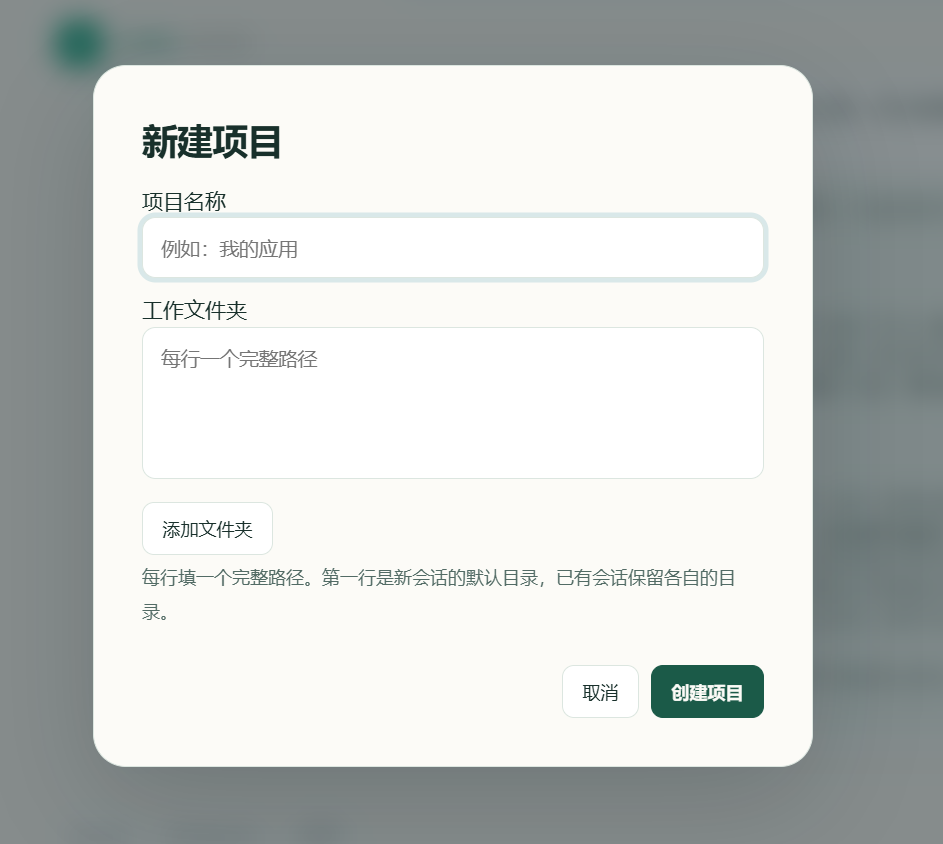

先认识三个词
联系人
可以邀请进会话的 AI 工具或人类伙伴，入口在界面左上角。
项目
用来归类多场会话，并绑定一个本机实际存在的工作文件夹。
会话
大家一起讨论、@ 交接和推进任务的独立空间，一个项目下可有多场会话。
全部安装、接入、协作边界与排障指引都在这里直接查阅，随时按关键词定位。
可以邀请进会话的 AI 工具或人类伙伴，入口在界面左上角。
用来归类多场会话，并绑定一个本机实际存在的工作文件夹。
大家一起讨论、@ 交接和推进任务的独立空间，一个项目下可有多场会话。
手机或窄屏浏览器访问时，先点击左上角菜单按钮展开左侧栏。
data 文件夹内。会完整保留。升级前请先完全退出正在运行的 AnY，然后将新安装包安装到原来的同一目录；若装进全新路径，旧目录中的历史数据不会自动迁移。
点击屏幕左上角的苹果菜单，选择「关于本机」。看到「芯片 · Apple」就下载 Apple 芯片版，看到「处理器 · Intel」就下载 Intel 版。两版都自带运行环境。
在 下载中心 下载对应版本，双击下载的文件，把 AnY 图标拖到旁边的「应用程序」。
在访达的「应用程序」中双击 AnY。如出现开发者验证提醒，打开「系统设置 → 隐私与安全性」，向下找到 AnY 的拦截提示，点「仍要打开」，再按屏幕提示确认。
首次打开后点击「新建项目」，填好名字并通过文件夹按钮选中你的工作目录。再打开联系人接入本机已登录的 Claude Code、Codex、Kimi Code 或 Antigravity 即可。

此版本尚未经过 Apple 公证。请确认安装包来自 AnY 官网。遇到开发者验证提醒时，可查看 Apple 官方图文步骤。如遇损坏或恶意软件警告，请停止打开。
在 下载中心 选择「高级：Python 源码包」下载解压后，双击其中的 启动 AnY.command（浏览器版）或 构建 AnY 桌面版.command。
curl ... | bash，Windows 在 PowerShell 执行 irm ... | iex。any 加入常用命令目录方便下次直接输入 any 启动。终端内支持用 @名称 自动补全成员、按 Ctrl+R 检索历史会话、用 /debate 发起多轮论道（/debate-finish 随时总结收尾）、用 /model 调整成员模型，以及在支持原生交接的工具上使用 /handoff 与 /return。
AnY 不会代你注册账号或提供模型额度，请先在本机装好并登录对应工具。
@名称 发送问题即可；不写 @ 时默认询问当前会话内的全部成员。127.0.0.1 仅限本机访问，别人手机打不开。start-member.bat；Mac 需 Python 3.11 与 Tk 并运行 start-member.command），导入配置并选好那台电脑上的 AI 与目录即可进入自动响应状态。data/ 文件夹内，安全退出前如有运行中任务请先等待结束。不是。AnY 面向全生态多 Agent，内置发现并支持 Claude Code、Codex、Kimi Code、Antigravity、Cursor、OpenCode、Qwen、Aider、Crush、Qoder、桌面协作工具与自定义 HTTP 服务。
先确认它已被勾选进当前会话的「成员与权限」，并且输入时用的 @名称 与联系人列表一致；再到它自己的原始终端或客户端确认账号登录态与可用额度正常。跨电脑接入的成员，请确认对方的连接端正显示已连接。
请确认你的 AnY 窗口仍在运行、邀请未到期，且生成的地址不是 127.0.0.1。同一 Wi-Fi 下留意本机系统防火墙是否放行访问；若不在同一网络，需填写双方网络均可达的访问地址。
先完整退出 AnY 后重新启动；如果现象重复发生，可查看软件数据目录下 data/any.log 记录的上下文（对外分享日志前请注意先检查并脱敏私人目录与对话内容）。